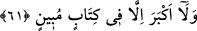

ALLAH’A ZERRE BİLE
GİZLİ KALMAZ
61. Ne durumda olursan ol, Kur’an’dan ne okursan oku ve siz ne yaparsanız yapın
onu yapmaya giriştiğinizde biz ona mutlaka şâhidiz. Ne yerde ne de gökte zerre
ağırlığınca bir şey, Rabb’inden uzak kalmaz. Ne bundan küçük ne de büyük bir şey
yoktur ki apaçık bir kitapta bulunmasın.
Ey Muhammed “ne durumda olursan ol, Kur’an’dan ne okursan oku” Çünkü Kur’an
okumak, Hz. Peygamber’in en büyük işidir. “ve siz” ey âdemoğulları “ne yaparsanız
yapın” bu son ifade, sadece insanoğulunun reisi Hz. Muhammed’e hitap ettikten sonra
hitabı genelleştirmiş olmaktadır. Bu sebepledir ki özel hitapta bulunulurken önemli olan
Kur’an okuma ameli zikredilmiş, genel hitapta bulunulurken ise hem büyük amelleri
hem de küçük amelleri içine alacak bir lafız zikredilmiştir.
Şeyhzâde der ki: Her ne kadar hitap ilk bakışta zâhiri bakımından sadece Hz.
Peygamber (a.s.)’a ise de bütün ümmet bu hitaba dahildir. Çünkü bir kavmin reisine
hitap edildiğinde o kavim de bu hitaba dahil olur. Nitekim şu âyette bu durum söz
konusudur: “Ey peygamber, kadınlarınızı boşadığınız zaman...” (et-Talâk, 65/1)
“onu yapmaya giriştiğinizde biz ona mutlaka şâhidiz.” Bu ifade, yukarıdaki üç fiille
kendilerine hitap edilenlerin genel durumlarından bir istisnâdır ve şöyle demektir: ‘Bu
fiillerden herhangi birini herhangi bir durumda ancak biz sizi gözetlediğimiz,
yaptıklarınıza vâkıf olduğumuz ve yaptıklarınızı tesbit ettiğimiz halde yaparsınız.’
“Ne yerde ne de gökte” yani varlık ve imkan dairesinde “zerre ağırlığınca bir şey”
yani ağırlık bakımından küçücük bir karıncaya yahut toz parçası kadar bir şey
“Rabb’inden” O’nun her şeyi kuşatan ilminden “uzak kalmaz.” gizli olmaz. “Ne
bundan” zerreden “küçük ne de büyük bir şey yoktur ki apaçık bir kitapta
bulunmasın.” Apaçık kitap, levh-i mahfuz’dur. Her şey bu levh-i mahfuzda yazılı
bulunduğuna göre nasıl olur da herhangi bir şey Allah nasıl olur da herhangi bir iş O’na
gizli kalır? Bu bakımdan hiç kimse hayır ya da şer tüm fiil ve sözlerinin karşılığını
almayacağına dair bir zanna kapılmasın!